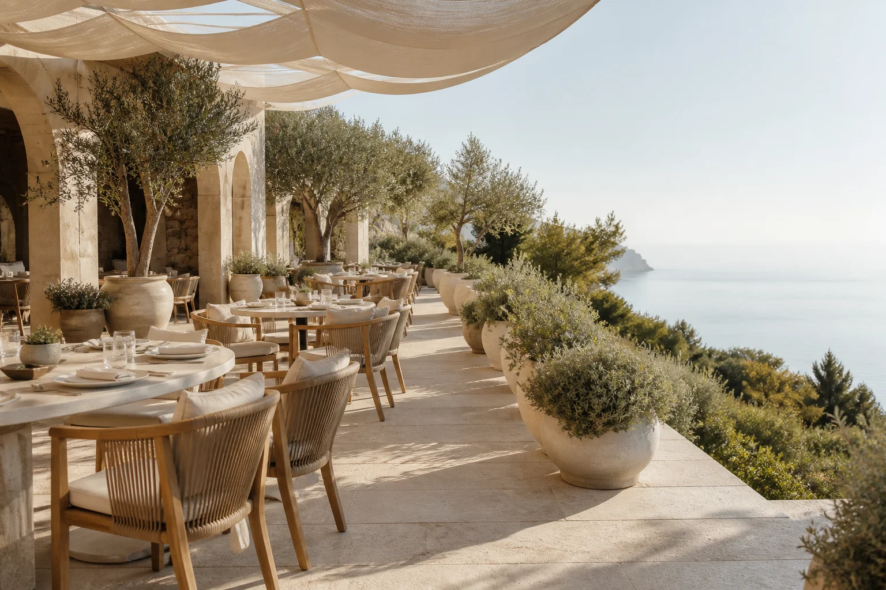
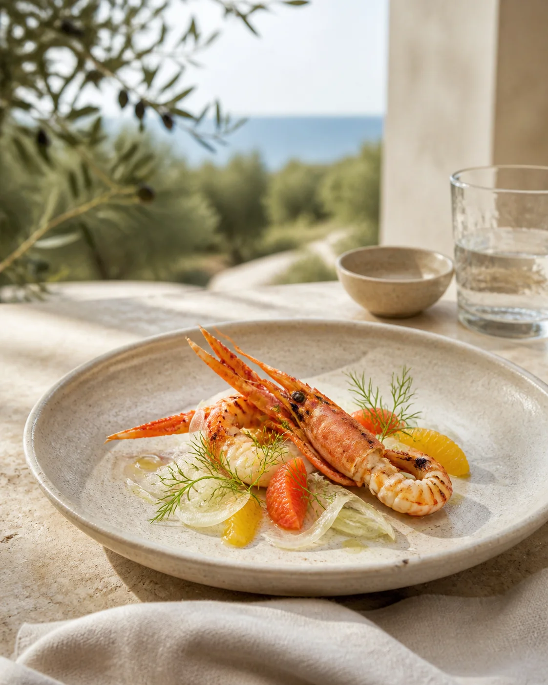

Garden Lunch
A relaxed two- or three-course menu with market plates and a glass from the coast.
Wed–Sun · 12:00From €42

Mediterranean light · Baltic season
Garden-grown herbs, coastal seafood and generous Mediterranean cooking, served beneath the olive trees from lunch into evening.
Reserve a tableThe garden leads
Chef Mara Ozola cooks with the brightness of the Mediterranean and the immediacy of Latvia’s short, vivid seasons. Plates are precise, generous and made to travel across the table.

Around the garden
Come for an easy lunch, a celebration under the canopy or a private evening composed around your guests.
Shade, chilled wine and the full garden menu.
Five courses as the courtyard moves into candlelight.
Eight counter seats beside the open kitchen.
Tailored menus for celebrations of up to 32 guests.
A diner postcard
“It feels like a hidden courtyard somewhere much farther south. Beautiful produce, gracious service and a lunch that became an evening.”
Amelia S. · Copenhagen
Before your table
Yes. Add them to your reservation and our team will confirm the best menu for your table. A plant-led evening menu is always available.
The garden is covered and heated when needed. In colder weather, service moves into our limestone dining room without losing the view.
Groups of eight or more are welcomed with a shared menu. The private garden can be reserved for up to 32 guests.
Meet us in the light
Choose a date, service and party size to see live availability.
Groups of eight or more? +371 20 000 212